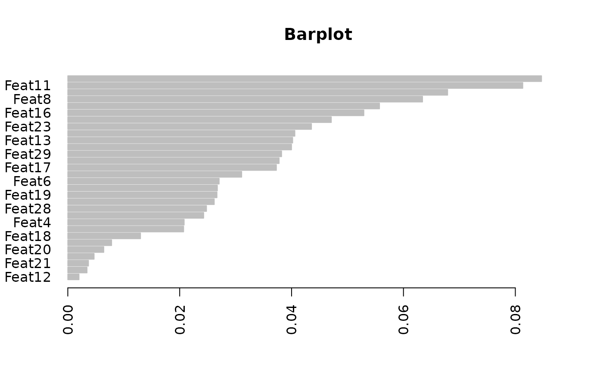
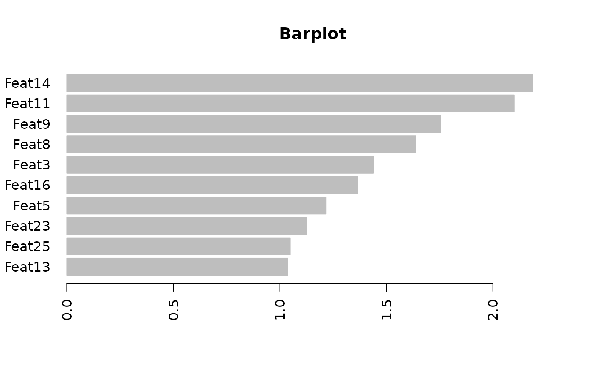
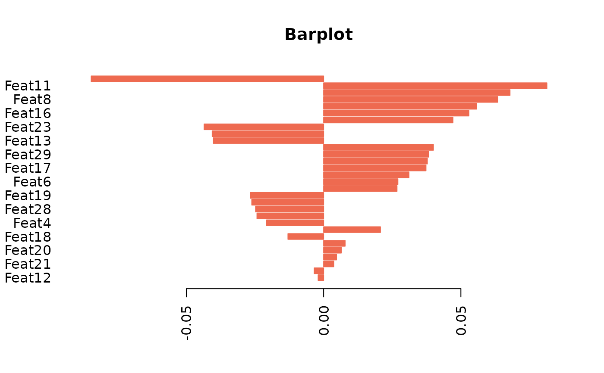

`plotImp()` displays the barplot of a numeric vector, which is assumed to contain the features importance (from a prediction model) or the contribution of each original variable to a Principal Component (PCA). In the barplot, features/PCs are sorted by decreasing importance.
Usage
plotImp(
x,
y = NULL,
relative = TRUE,
absolute = TRUE,
nfeat = NULL,
names = NULL,
main = NULL,
xlim = NULL,
color = "grey",
leftmargin = NULL,
ylegend = NULL,
leg_pos = "right",
...
)Arguments
- x
Numeric vector containing the importances.
- y
(optional) Numeric vector containing a different, independent variable to be contrasted with the feature importances. Should have the same length and order than `x`.
- relative
If TRUE, the barplot will display relative importances. (Defaults: TRUE).
- absolute
If FALSE, the bars may be positive or negative, which will affect the order of the features Otherwise, the absolute value of `x` will be taken (Defaults: TRUE).
- nfeat
(optional) The number of top (most important) features displayed in the plot.
- names
(optional) The names of the features, in the same order than `x`.
- main
(optional) Plot title.
- xlim
(optional) A numeric vector. If absent, the minimum and maximum value of `x` will be used to establish the axis' range.
- color
Color(s) chosen for the bars. A single value or a vector. (Defaults: "grey").
- leftmargin
(optional) Left margin space for the plot.
- ylegend
(optional) It allows to add a text explaining what is `y` (only if `y` is not NULL).
- leg_pos
If `ylegend` is TRUE, the position of the legend. (Defaults: "right").
- ...
(optional) Additional arguments (such as `axes`, `asp`,...) and graphical parameters (such as `par`). See `?graphics::barplot()`.
Value
A list containing:
* The vector of importances in decreasing order. When `nfeat` is not NULL, only the top `nfeat` are returned.
* The cumulative sum of (absolute) importances.
* A numeric vector giving the coordinates of all the drawn bars' midpoints.
Examples
importances <- rnorm(30)
names_imp <- paste0("Feat",1:length(importances))
plot1 <- plotImp(x=importances,names=names_imp,main="Barplot")

plot2 <- plotImp(x=importances,names=names_imp,relative=FALSE,
main="Barplot",nfeat=10)

plot3 <- plotImp(x=importances,names=names_imp,absolute=FALSE,
main="Barplot",color="coral2")
